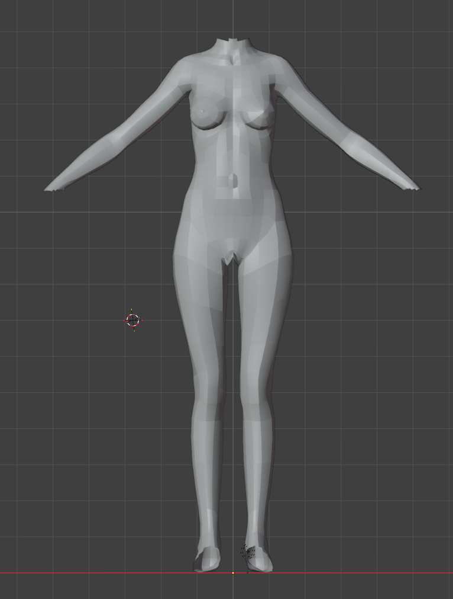
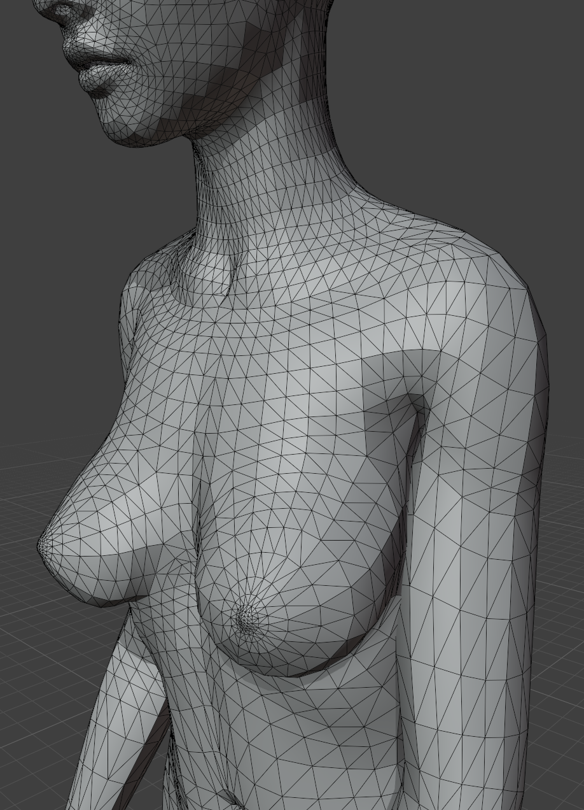
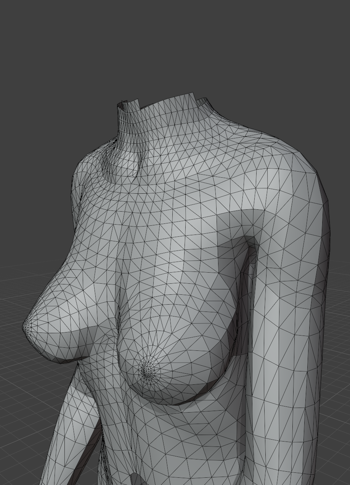
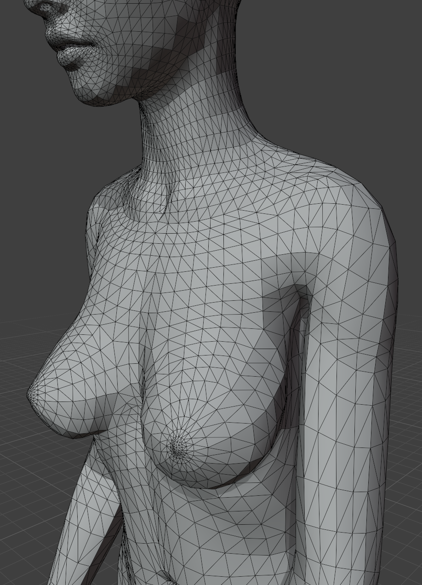

Mesh Motion Mapper#
Blender existing modifier
Blender has tools to tranfer motion from one mesh to another, such as mesh deform modifier. The mesh motion mapper does not provide functions that does not exist in Blender. It is also not faster than Blender's internal modifier or geometry node given the addon system is going through Python. However, we create the mesh motion mapper node for a specific use case for transfering simulation result to a render mesh to simplify the setup process.
Motivation#
The simulation mesh is almost never the same as the render mesh. In most of our examples, we used render mesh as subdivided simulation mesh. However, in production, many cases, we can not assume any topological relation between the render mesh and the simulation mesh.
Discrepancy between simulation mesh and render mesh
A reminder, HiPhyEngine can only guarantee intersection free of the simulation mesh. User will have to tune collision radius and barrier stiffness so there is enough space for the render mesh to be intersection free, when the motion is transferred.
To further complicate the issue, sometimes user may not wish to simulate the whole mesh. For instance, with the image below, we want to resolve the collision mesh's self intersection with motion mapper, however, we want to exclude hands, toes, and head from the simulation, because their small details will cause issues for the collision resolution algorithm, and they should be driven by animation directly anyway. Therefore, we created the simulation mesh by excluding those areas. However, the final render mesh will still need to have those parts of the body.
{kind=link}

We created the mesh motion mapper to provide user a simple way to combine the motion from animation and simulation.
Shapes#
Guide Shape-
The
Guide Shapeis the main driver for theDriven Shape.Guide Shapedoes not have to have the same topology as theDriven Shape, however, it must be a triangle mesh. During binding,Driven Shapevertices will be bond to the surface to theGuide Shapeif it is within the Binding Radius of aGuide Shapetriangle face.Guide Shapeis usually the simulation mesh. Driven Shape-
The
Driven Shapeis the mesh that you wish to deform and follow theGuide Shape.Driven Shapeis bond to theGuide Shapeper vertex, therefore theDriven Shapecan be any type of mesh. If a vertex of theDriven Shapeis not bond to theGuide Shape(due to out of binding radius), it will follow theTarget Shapeinstead.Driven Shapeis usually the render mesh. Target Shape-
The
Target Shapeis the mesh thatDriven Shapewill follow if a vertex is not bond to theGuide Shape(due to out of binding radius).Target Shapemust have the same vertex count as theDriven Shape, however it can be any type of mesh as only the vertex information of theTarget Shapeis used.Target Shapeis usually the raw animated mesh.
Properties#
| Property Name | Description |
|---|---|
| Binding Radius | Radius for binding guide and driven mesh (In guide mesh space) |
Binding Space
The binding happens in the guide mesh space. So Binding Radius is also in the guide mesh space. If there is a scaling factor of 100 of the guide mesh, Binding Radius will be divided by 100. If you are uncertain how the conversion works, you can always just make sure the scaling of the guide mesh to be 1.
Example#
You can find a mesh motion mapper example here.
In the scene: female_base is the soft collider simulation used for the guide shape, female_base.driven is the driven shape for rendering, and female_base.anim is the original animated mesh used as the target shape. Note that female_base has part of the mesh removed as they are not relevant to contact resolution. female_base.driven and female_base.anim shares the same topology.
That the Target Shape is the raw animation and contains self intersection at the upper arm.
{kind=link}

The Guide Shape is the simulated soft collider. It resolves the self intersection but we have excluded the head from the simulation.
{kind=link}

The Driven Shape is the render mesh. It combines Target Shape and Guide Shape, and it has the resolved arm intersection and animated head.
{kind=link}
